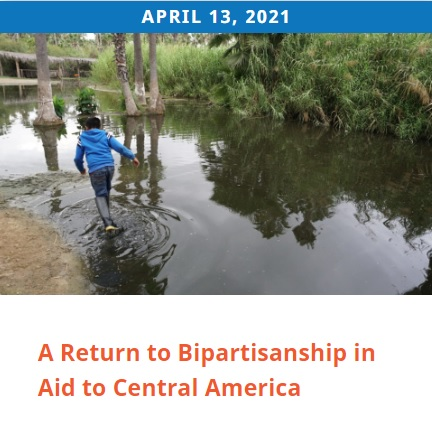
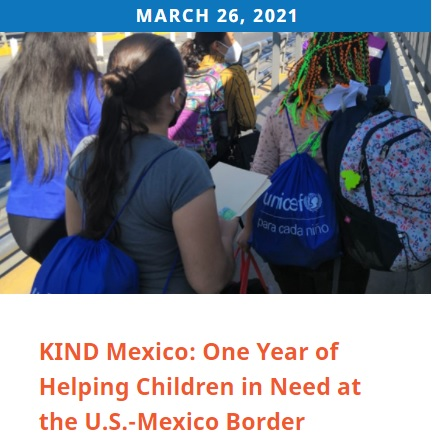

Kids in Need of Defense (KIND) is the preeminent U.S.-based nongovernmental organization devoted to protection of unaccompanied and separated children.
KIND envisions a world in which every unaccompanied child on the move has access to legal counsel and has their rights and well-being protected as they migrate alone in search of safety.
Mission and Vision
We envision a world in which children’s rights and well-being are protected as they migrate alone in search of safety.We will achieve our vision by:
Ensuring that no child appears in immigration court without high quality legal representation;
Advancing laws, policies, and practices that ensure children’s protection and uphold their right to due process and fundamental fairness; and
Promoting in countries of origin, transit, and destination durable solutions to child migration that are grounded in the best interests of the child and ensure that no child is forced to involuntarily migrate.

In 2008, KIND was founded by the Microsoft Corporation and UNHCR Special Envoy Angelina Jolie to address the gap in legal services for unaccompanied minors.
KIND now has offices across the United States and in Mexico that provide unaccompanied children with holistic care that includes legal assistance and social services.
Through strategic partnerships, we provide pro bono legal representation for refugee and migrant children across the country.
Since its inception, KIND has received referrals for more than 21,000 cases and now serves over 5,000 children annually in partnership with nearly 700 law firm, corporate, law school and bar association partners.

In addition, through our comprehensive social services programming, KIND complements its legal efforts by bringing a truly holistic approach to protecting children after their arrival in the United States. We have connected thousands of children – and their caretakers – with essential medical care, mental health care, educational opportunities, and crisis intervention to ensure their safety and well-being.
Beyond U.S. borders, KIND’s Mexico-based offices and its programming in Central America works with partners on the ground to address the root causes of migration, protect children during migration, and connect repatriated children to essential services. Through its European Initiative, KIND and partners in Belgium, France, Greece, Ireland and the United Kingdom work to ensure access to high quality pro bono legal assistance for unaccompanied children in Europe.
Each of these efforts informs KIND’s robust state, national, and international advocacy and public education work to champion policies and laws that protect unaccompanied children on the move no matter where they are in their migration journey.
Legal Services
KIND provides attorneys to represent children at no cost. We have been referred more than 20,900 children in need of legal assistance.
We have built a robust training network of over 50,600 participants and more than 664 law firms, corporations, law schools and bar associations partners.
No immigration experience is necessary. Our dedicated team trains and mentors our volunteers throughout their cases with us.
Our staff also represent these children and provide Know Your Rights presentations in the cities in which we work to share vital information with communities in need.